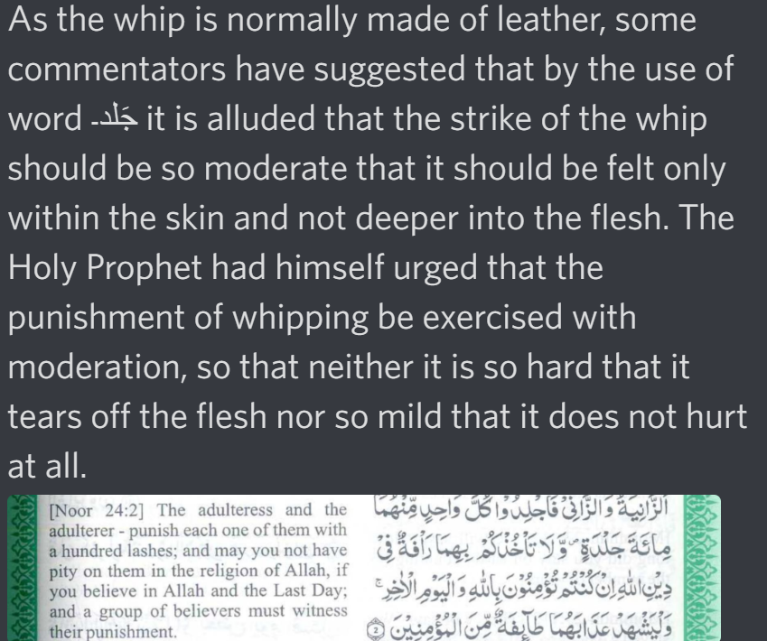

https://m.youtube.com/watch?v=Q4FJkNcm5ho
As for the non married it is 100 lashes same reasons mentioned in the video as to why

https://yaqeeninstitute.org/read/paper/stoning-and-hand-cutting-understanding-the-hudud-and-the-shariah-in-islam
What is a ruling if a dhimi non Muslim citizen does this act so if he comes up and wants us to rule on
him then yes we would punish him but if he doesn’t come he is left alone
Evidences 👇:
Imam Ahmed (May God have mercy on him) said: their acts aren’t looked after nor asked about unless
they come to us , if they do we establish the law on them
- Al-Mughni ibn Qudamah volume 9, page 76
Ash-Shafi’ie (May God have mercy on him) said: “If that was established for you that leads you that
the ruler has the choice on ruling on them or leaving them with no punishment.”
Kitab Al-Umm
So Ash-Shaafi’e and imam Ahmed said it is not ruled on them untill they come to us to rule on them